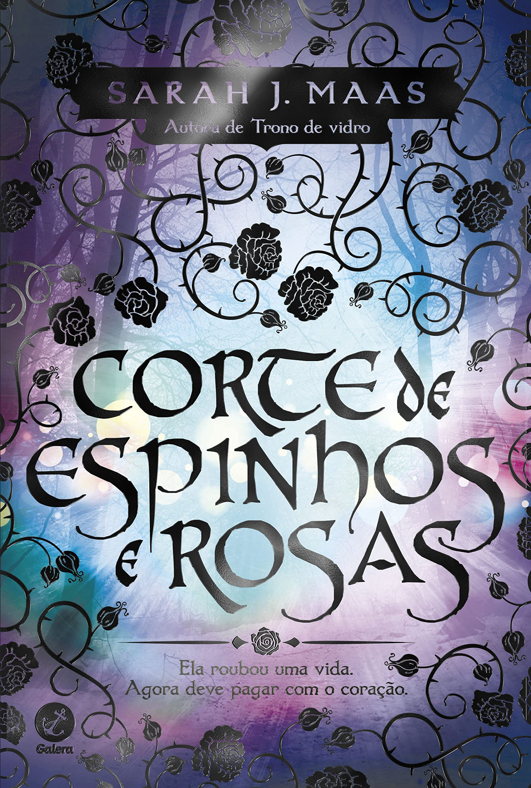
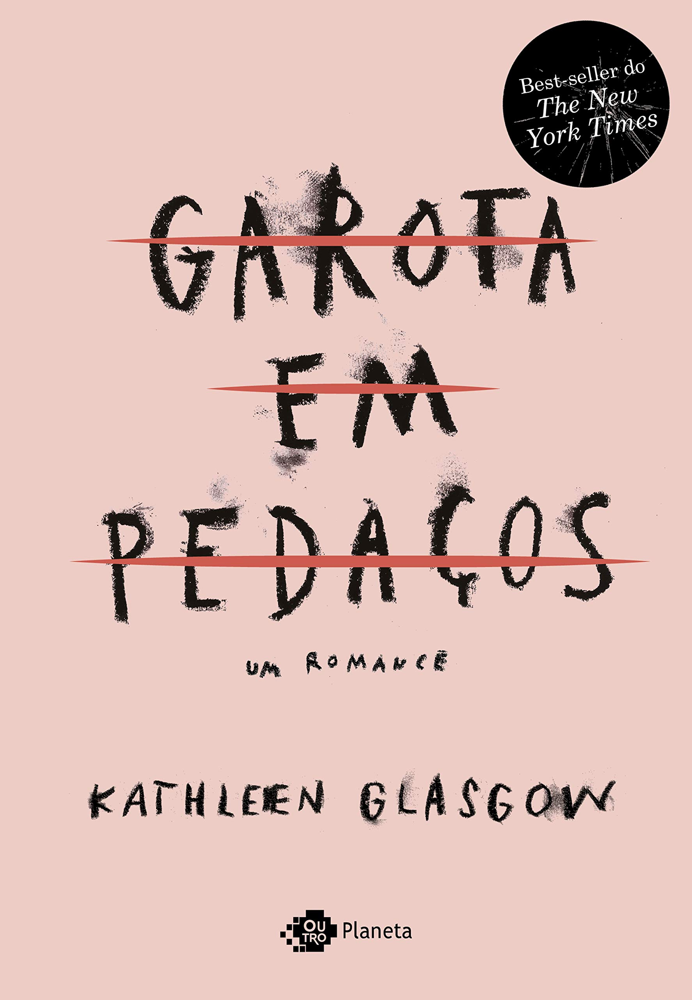

A livraria online foi criada com o objetivo de ajudar a deixar os leitores mais informados.
Autor(es): Colleen Hoover
Editora: Galera
Coleção: É assim que acaba
Número de páginas
368 páginas
Editora
Galera
Data da publicação
18 janeiro 2018
Em É assim que acaba, Colleen Hoover nos apresenta Lily, uma jovem que se mudou de uma cidadezinha do Maine para Boston, se formou em marketing e abriu a própria floricultura. E é em um dos terraços de Boston que ela conhece Ryle, um neurocirurgião confiante, teimoso e talvez até um pouco arrogante, com uma grande aversão a relacionamentos, mas que se sente muito atraído por ela.
Quando os dois se apaixonam, Lily se vê no meio de um relacionamento turbulento que não é o que ela esperava. Mas será que ela conseguirá enxergar isso, por mais doloroso que seja?
É assim que acaba é uma narrativa poderosa sobre a força necessária para fazer as escolhas certas nas situações mais difíceis. Considerada a obra mais pessoal de Hoover, o livro aborda sem medo alguns tabus da sociedade para explorar a complexidade das relações tóxicas, e como o amor e o abuso muitas vezes coexistem em uma confusão de sentimentos.

Num mundo dividido uma muralha mágica separa duas espécies. De um lado, os feéricos vivem dentro de suas fronteiras cheias de beleza e mistério; do outro, os humanos possuem apenas medo, desconfiança e dificuldades.
Feyre, filha de um casal de mercadores humanos e falidos, se torna caçadora para sustentar a família. Dura como as flechas que carrega, letal como sua pontaria, ela abandona as fantasias de garota e as troca pela árdua vida nas florestas ao redor de sua aldeia.
Sua única alegria é observar as cores e sonhar em capturá-las. Mas, na floresta, coberta de neve tudo é branco e árido; como o ódio pelos feéricos que carrega no coração; Como as telas que não pode comprar ou colorir. Até que um enorme lobo cruza seu caminho... Sem hesitar, Feyre dispara... uma flecha. Um ato de rebelião.
Após matar o lobo, uma criatura bestial surge exigindo uma reparação. Arrastada para além do muro, para uma terra mágica e traiçoeira - que ela só conhece por meio de lendas -, a jovem descobre que seu captor não é um animal, mas Tamlin, Grão Senhor da Terra Primaveril. Um feérico com um segredo, escondido sob uma máscara. Ela descobre ainda que o então animal que havia assassinado era, na verdade, uma criatura mágica, uma fada zoomórfica transformada em lobo.
À medida que ela descobre mais sobre este mundo onde a magia impera, seus sentimentos por Tamlin passam da mais pura hostilidade até uma paixão avassaladora. Enquanto isso, uma sinistra e antiga sombra avança sobre o mundo das fadas e Feyre deve provar seu amor para detê-la ou Tamlin e seu povo estarão condenados.
Corte de espinhos e rosas é um livro de fantasia de tirar o fôlego. Memorável em todos os aspectos, com personagens complexos, enredo rico e um magnífico mundo de fantasia combinados impecavelmente para criar um romance épico.
